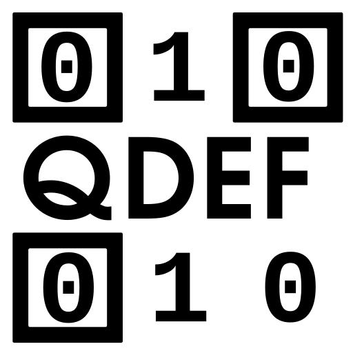

Quick Data Exchange Format
QDEF
A general-purpose binary container for multi-action 2D barcodes and NFC tags — carry one or more typed records in a single scan or tap.
What a QDEF payload looks like
A single scan carrying a Wi-Fi credential and a fallback URL — two unrelated records, each independently routable, in one 74-byte payload:
51 44 45 46 # "QDEF" magic
82 # root Record: array(2), typeId
# omitted → default 0 (Bundle);
# 2 subrecords
82 # Record 1: array(2)
18 64 # typeID: 100 (Wi-Fi)
a3 # field map(3)
00 6e 4d 79 20 43 6f 66 66 65 65 20 53 68 6f 70
# 0: "My Coffee Shop"
02 68 67 75 65 73 74 31 32 33 # 2: "guest123"
04 02 # 4: 2 (WPA2)
82 # Record 2: array(2)
0a # typeID: 10 (Open/Hint URI)
a1 # field map(1)
00 78 1f 68 74 74 70 73 3a 2f 2f 65 78 61 6d 70
6c 65 2e 63 6f 6d 2f 63 6f 66 66 65 65 2d 6d
65 6e 75
# 0: "https://example.com/coffee-menu"
[
[100, { # Wi-Fi
0: "My Coffee Shop", # CRITICAL: SSID
2: "guest123", # CRITICAL: Password
4: 2 # CRITICAL: WPA2
}],
[10, { # Open/Hint URI
0: "https://example.com/coffee-menu"
}]
]
A Wi-Fi app reads Record 1. A generic browser offers Record 2 as a fallback URL. Neither needs to know the other exists.
Why QDEF
Existing text barcode schemes (WIFI:S:...;;, BEGIN:VCARD)
are rigid, single-purpose, and text-only. NDEF solves multi-record framing
but only for NFC. Nothing fills that role for a plain byte-mode QR, Data
Matrix, or Aztec code — or for an NFC payload with no application-specific
MIME type already routing it.
QDEF is the missing container:
- Binary-first — no alphanumeric-mode constraint, no base32/base41 overhead.
- Multi-action — one self-delimited CBOR array of Records, so unrelated applications can share one physical code.
- Layered — a minimal mandatory core (routing and criticality only) plus a separate optional standard library (split, compress, encrypt, URI fallback).
- Usable by constrained scanners — every Record's type is readable at zero decode cost from a plain map key.
Explore
Specification
Full wire format spec — container framing, Record architecture, standard library types, and grammar.
Read the spec →Design Rationale
Why QDEF looks the way it does — mechanisms tried and removed, alternatives weighed, and open questions.
Read the design doc →Examples
Illustrative Record Type definitions for Wi-Fi, event tickets, and more.
See examples →Implementations
Projects and apps using QDEF, including TagDrop and reference prototypes.
See implementations →Related Work
A survey of the field — NDEF, BBQr, MCAP, TagDrop, and how QDEF compares.
See related work →Namespace Registry
Published QDEF namespaces and their Record Types — the canonical registry.
Browse registry →Hex Validator
Paste a hex-encoded QDEF payload to verify its structure and inspect its Records.
Open tool →